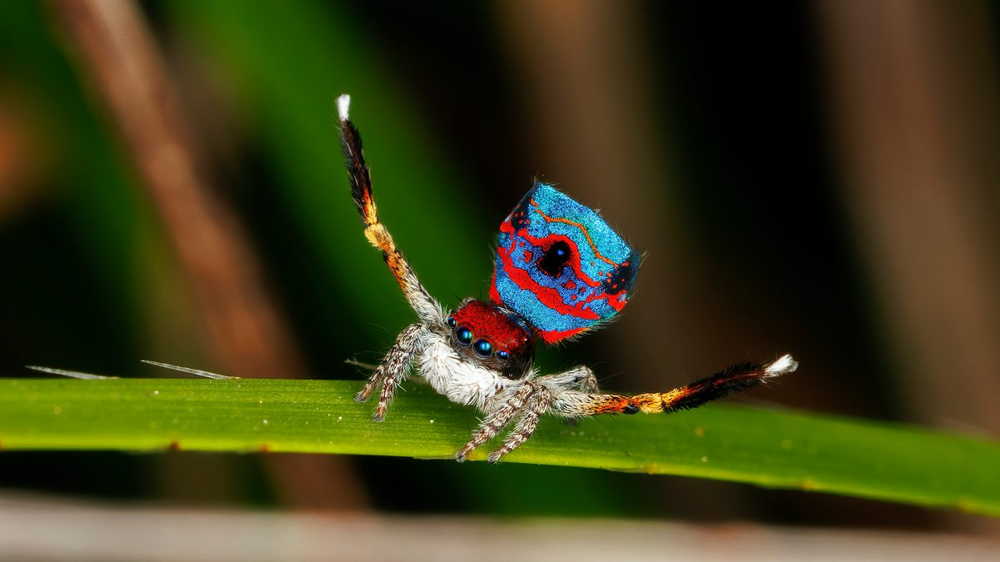
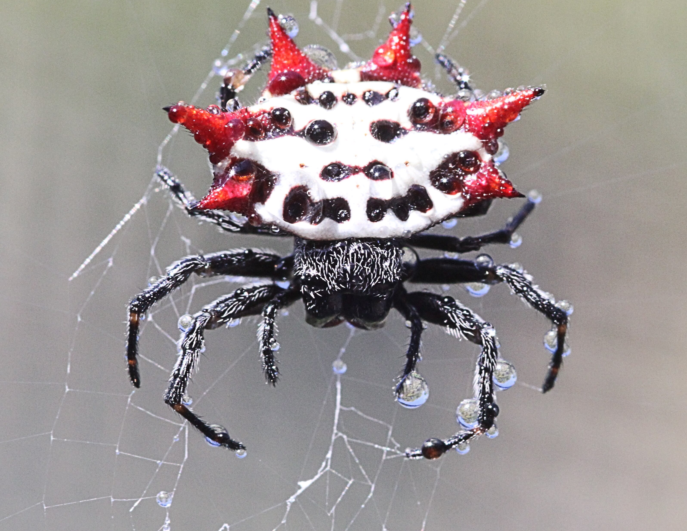
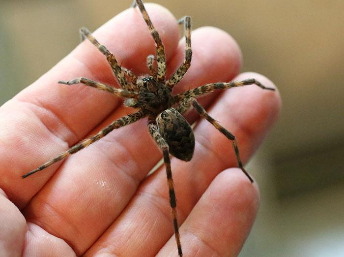

Facts about spiders



Some fun facts about spider are a diverse arachnids with over 50,000 species, and while all produce silk not all spinn webs. Spiders usually have eight eyes,but soome have six, four, two, or even none at all. The blood of spider is blue because it contains a copper-based protein called hemocyanin, which turn blue when it combies with oxygen.